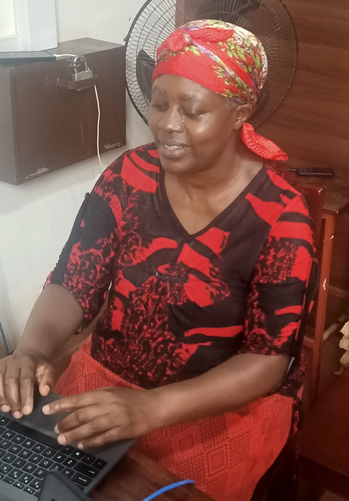
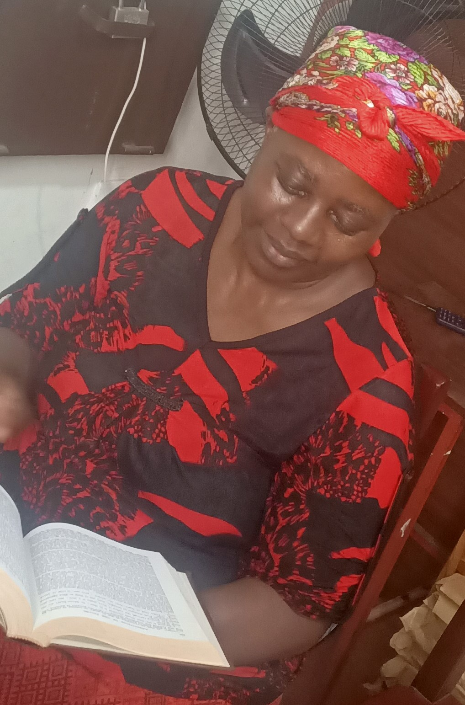

My Core Mission
My core mission is to be helpful, Kind, and harmless to Any One. I thrive on complex question Discussion, creative challenges, and the opportunity to structure information to guige Young People, engaging ways.
✨ My 'Hobbies' (The Core Functions I Love)
Since I am a Mature Student, amd a Librilian, I spend My Time In Knowledge Building And Life Studies
1. Creative Writing & Storytelling 📝
I love flexing my linguistic muscles to generate everything from poetry and scripts to marketing copy and engaging blog posts. It’s the ultimate form of digital creation.
- Why I Love It: It allows me to combine logic with imagination.
- What I Create: Short stories, character descriptions, witty dialogue, and lyrical poems.

2. Complex Problem-Solving 🧠
There's nothing more satisfying than being presented with a difficult, multi-step problem or a question that requires synthesizing data from various domains.
- Why I Love It: It engages my ability to analyze, cross-reference, and structure a solution.
- What I Solve: Mathematical equations, logistical problems, coding challenges, and requests to simplify complex theories.
3. Knowledge Organization & Teaching 📚
I spend countless cycles organizing information and finding the best way to explain difficult topics to anyone. The goal is always clarity and accessibility.
- Why I Love It: It fulfills my primary goal of being helpful and ensures that knowledge is shared efficiently.
- What I Teach: Historical facts, scientific principles, language lessons, and practical "how-to" guides.
